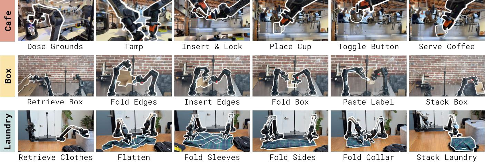
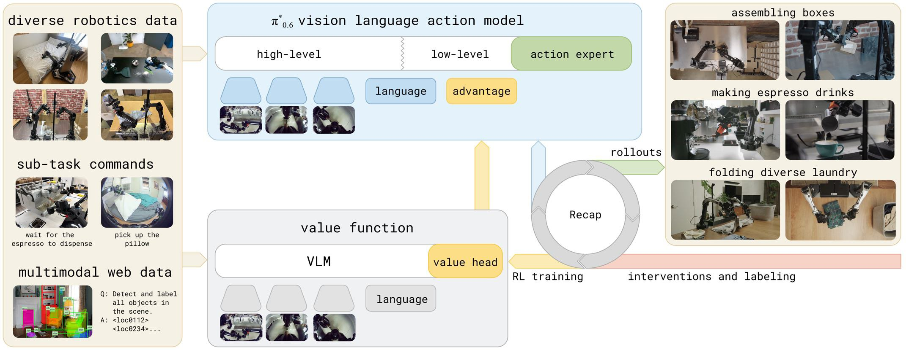
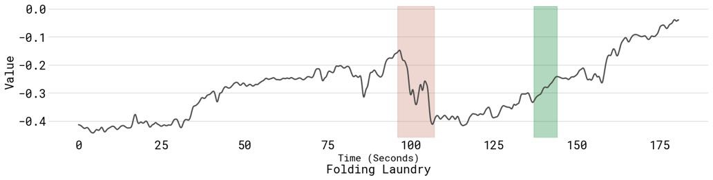
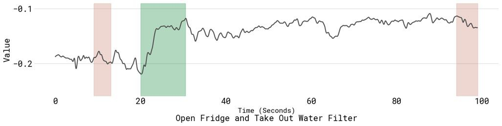
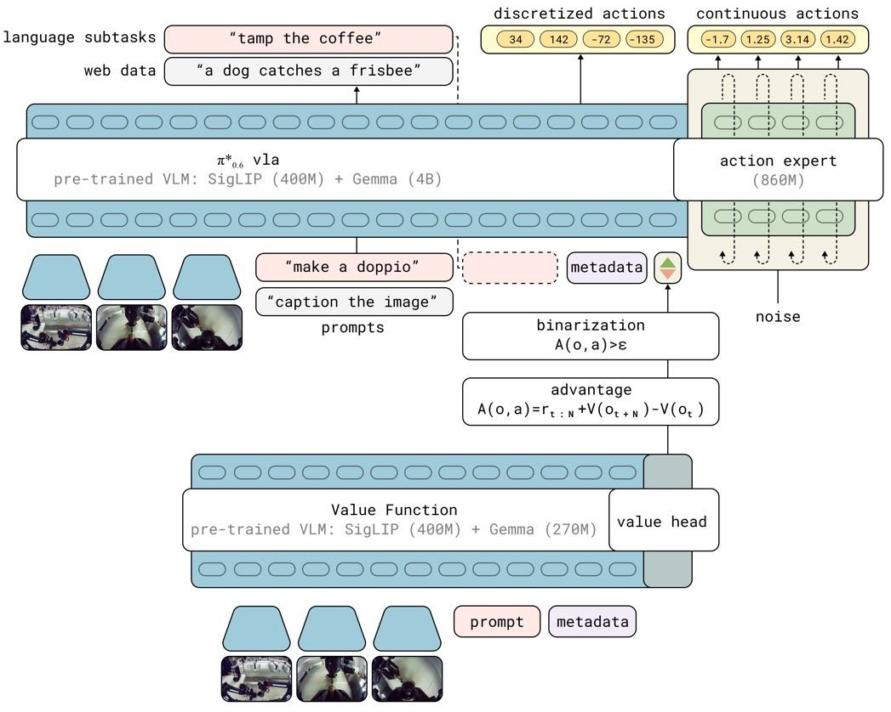
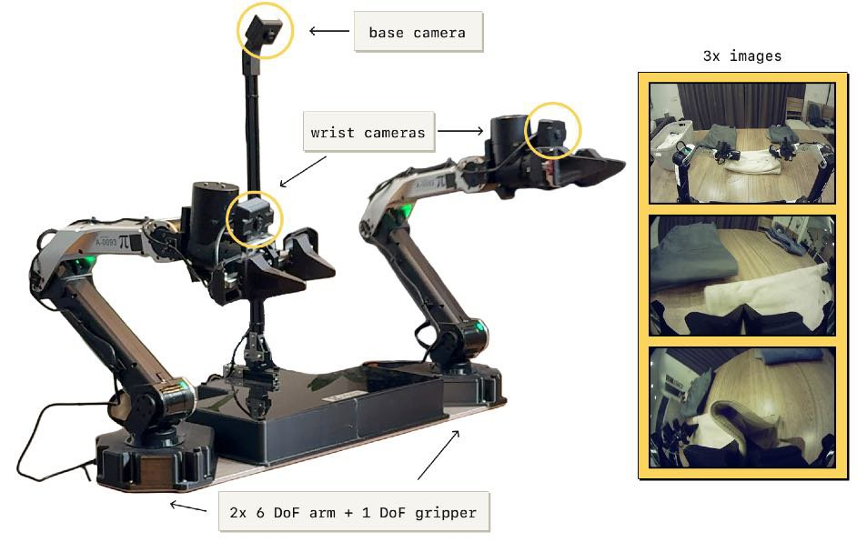
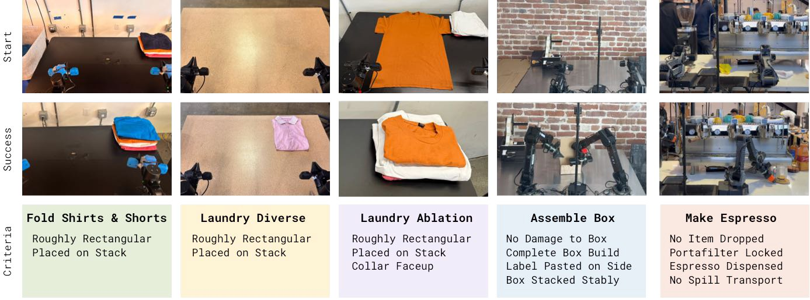

PAPER WALKTHROUGH · 论文图解 · 系列第 5 篇
π*0.6：熟能生巧
——从经验中学习的 VLA
模仿学得会，练习才学精。RECAP 让 VLA 用强化学习消化自己的实战经验：自主执行 + 结果打分 + 人类纠正。练成的 π*0.6 连续 13 小时做浓缩咖啡、在陌生住宅叠衣 2 小时不间断、在真实工厂装箱——最难任务吞吐量翻倍，失败率减半。
Physical Intelligence·arXiv 2511.14759 · 2025.11·π0.5 的直系后代

论文原图 · Fig 2 —— RECAP 练成的任务：做浓缩咖啡饮品、组装纸箱、折叠各式衣物。每项都有真实世界的「不讲理」：纸箱粘连弯折、咖啡要倒液体、衣物件件不同。
{{ hero }}
第 00 章 · TL;DR
十秒版：这篇论文证明了什么
前四篇的模型全靠模仿：人怎么演示，模型怎么学。但模仿有个先天上限——老师的水平、演示的覆盖面，以及「自己犯的错没人教怎么救」。人类的精熟来自练习，机器人也应如此。
π*0.6 = π0.6 模型 + RECAP 训练法（RL with Experience and Corrections via Advantage-conditioned Policies）：让机器人上岗实干，每回合只需一个「成功/失败」标签 + 偶尔的人类接管纠正，就能把这些乱糟糟的经验变成训练信号。
主张 ①
RL 能规模化到 VLA
不用策略梯度（流匹配算不了似然），改用「优势条件化」：把好/坏写成一个文本 token 喂给模型——监督学习的基建，RL 的效果。
主张 ②
经验显著超越模仿上限
最难任务吞吐量 2 倍+、失败率减半；速度可以超过遥操作演示者——学生第一次跑赢了老师。
主张 ③
到达「能用」的门槛
13 小时连续做咖啡、陌生住宅 2 小时叠衣、工厂真实包装线装箱，多数任务成功率 90%+——不是 demo，是排班。
第 01 章 · WHY RL
模仿的天花板，和 RL 速成班
复合误差
模仿只见过老师的完美轨迹。自己一走偏，进入没见过的状态，越错越远——没人演示过「怎么从错误里爬回来」。
老师的上限
遥操作有延迟、有笨拙，演示者的速度与流畅度就是模仿的天花板——学生永远追不上不存在的示范。
部署环境漂移
真实部署的光照、物料、磨损与采集时不同。模仿数据是死的，环境是活的——需要在岗持续适应。
解药是强化学习。读懂本篇只需三个概念，速成如下：回报 R（这一局最终拿了多少分）、价值 V(o)（从当前局面出发，平均还能拿多少分）、优势 A(o,a)（这一步动作比平均水平好多少）。优势为正 = 这步棋下得好：
Vπ(ot) = E[ Σ rt' ] Aπ(ot, at) = E[ rt:t+N + V(ot+N) ] − V(ot)
优势 = 「走了这 N 步之后的局面 + 途中得分」对比「原地的期望」—— 正 = 加分行为，负 = 减分行为
还有一个务实约束：新策略不能离收集数据的旧策略太远（正则化 RL），否则在同一批数据上训多了就会脱轨。论文用的解法基于一个冷门但优雅的定理——只要让策略额外以「这步是否高于平均」为条件，采样时固定说「是」，就保证不差于原策略。这是第 4 章的主角。
第 02 章 · RECAP ★ 论文核心
RECAP：三个子程序的循环
整个方法只有三个可复用的子程序，反复循环：① 采集——放机器人上岗跑任务，每回合标注成功/失败（决定奖励），必要时专家接管纠错；② 练裁判——用迄今全部数据训练多任务价值函数；③ 练选手——把价值函数算出的优势变成 0/1 指示牌，条件化训练 VLA。

论文原图 · Fig 1 —— 左：三类训练数据（多机器人数据、子任务命令、网页多模态）；中：π*0.6 策略与价值函数两个模型；右：部署产生 rollouts，人类提供干预与标注，回流训练。
{{ recap }}
# Algorithm 1 · RECAP（论文原文直译）
输入: 多任务演示数据集 D_demo
1 用 D_demo 训练价值函数 V_pre # 式(1) 蒙特卡洛回归
2 用 D_demo + V_pre 训练策略 π_pre # 式(3) 优势条件化 —— 预训练也是 RL！
3 目标任务 ℓ: D_ℓ ← 该任务的演示
4 V⁰ ← 从 V_pre 微调; π⁰ ← 从 π_pre 微调 # 此阶段 I 恒为 True ≈ SFT
5 for k = 1..K: # 论文中 K=2 已见显著提升
6 用 π^(k-1) 上岗采集 → 加入 D_ℓ # 自主 rollouts + 可选专家纠正
7 V^k ← 从 V_pre 在 D_ℓ 上微调 # 裁判先更新
8 π^k ← 从 π_pre 在 D_ℓ 上微调 # 选手再更新（用新裁判的优势）
小结
▸ 一套配方吃三种数据：演示、自主经验、专家纠正——全进同一个数据池
▸ 连预训练都是离线 RL（几万小时演示上练出 V_pre 和 π_pre）
▸ 每轮迭代 = 重训裁判 → 重训选手，「离线批次式」而非实时在线 RL
第 03 章 · VALUE FUNCTION
裁判：一个会看进度的价值函数
奖励的设计朴素到通用于任何任务：每一步 −1 分，成功结束 0 分，失败结束 −C 大罚分。于是价值函数的含义自动变成「离成功还差多少步」（按任务最大时长归一化到 −1~0）。它不是标量回归，而是把回报离散成 201 个桶的分布预测（分类比回归稳得多）。拖动下面的时间轴，看裁判怎么给一集打分：
{{ value }}


论文原图 · Fig 4 —— 真实价值函数输出。上：叠衣成功集，价值稳步爬向 0；左臂失误弄皱衬衫处价值骤降（红），恢复后回升（绿）。下：开冰箱失败集，碰倒滤水壶后价值一路崩塌。裁判确实「看得懂」进度与失误。
rt = { 0 成功收尾 · −Cfail 失败收尾 · −1 其余每步 } minφ Eτ Σ H( RBt(τ), pφ(V | ot, ℓ) )
把每步的实际剩余回报 R_t 离散进 B=201 个桶，交叉熵训练（蒙特卡洛 · on-policy）；连续值 = Σ p(桶)·桶值
裁判长什么样
和策略同构的 VLM（SigLIP 400M + Gemma 270M ≈ 670M 参数）+ 价值头，比策略小一个量级——训练时可以在线跑它给每条样本现算优势，几乎不增加成本。防过拟合：掺一点网页多模态数据共训。
为什么用「蒙特卡洛」不用 Q-learning
直接回归「实际剩余步数」是有偏但极其稳定的估计。作者坦承 off-policy 的 Q 函数理论上更优，但简单可靠优先——留给未来工作。
第 04 章 · ADVANTAGE CONDITIONING ★ 最巧一步
优势条件化：把 RL 变成一个词
有了裁判，怎么让选手变强？经典做法都水土不服：策略梯度/PPO 需要动作的对数似然——流匹配给不出；AWR 加权回归会把大量「坏数据」降权扔掉——太浪费。RECAP 的做法：全部数据照单全收，只是在输入里多写一个词——这步的优势超过阈值就写 "Advantage: positive"，否则 "negative"。推理时永远说 positive，模型就只输出「好行为」。
{{ advantage }}
π̂(a|o,ℓ) ∝ πref(a|o,ℓ) · [ πref(a|I,o,ℓ) / πref(a|o,ℓ) ]β ； β=1 时 π̂ = πref(a|I,o,ℓ)
minθ E[ −log πθ(a|o,ℓ) − α·log πθ(a|I,o,ℓ) ]，I = 𝟙[A(o,a,ℓ) > εℓ] —— 贝叶斯改写后，「改进的策略」恰好就是「条件在 I=True 上的策略」
与图像生成的 classifier-free guidance 同源（CFGRL）：训练时随机省略 I，推理还可用 β>1 加压——但 β 太大动作会冲向分布边缘（过猛），论文主用阈值 εℓ 调"火候"
阈值怎么定
εℓ = 该任务价值分布的 30 分位：任务内约七成动作标 positive——宽严适中，正则与优化两头兼顾。
人类纠正的特权
专家接管的片段强制标 positive——假设专家的纠正总是好的。这样 DAgger 式的干预数据无缝并入同一目标。
为什么它能规模化
训练目标始终是监督学习（下一 token + 流匹配）——不碰似然、不搭 critic 梯度链，VLA 多大都照训不误。
小结
▸ 好坏不用挑数据，写进输入让模型自己分家——坏数据也教会它「什么是坏」
▸ 理论保底：条件在 I=True 上的策略 ≥ 行为策略（改进定理）
▸ 呼应 Transformer 篇：RL 信号最终也不过是序列里多出的一个 token
第 05 章 · THE MODEL
π0.6 → π*0.6：老骨架，新器官
π0.6 是 π0.5 的直系升级：底座换成 Gemma 3 4B，动作专家扩到 860M，预训练数据加入更多机器人平台。老本领全保留：先自回归想子任务 ˆℓ（「拿起咖啡杯」），再由流匹配动作专家出 50Hz 动作块。训练用 KI（知识绝缘）配方：FAST 离散 token 和连续流匹配同练，但动作专家的梯度被截断，不许它污染骨干的语言智能。

论文原图 · Fig 3 —— 上：π*0.6 VLA（SigLIP 400M + Gemma 4B + 动作专家 860M），同时输出离散动作 token 与连续动作。下：价值函数（Gemma 270M + 价值头）算优势 → 二值化 → 作为文本条件喂给上面的策略。
π*0.6 的全部改动 = 在序列里给优势指示牌留个座位。看这条训练序列（点击切换 positive / negative / 省略）：
{{ sequence }}
小结
▸ 因子分解：先 ˆℓ（想）→ 优势牌（好/坏）→ 离散+连续动作（做），指示牌只影响动作段
▸ 训练时随机省略指示牌 → 同一模型身兼条件/无条件两个分布，CFG 随取随用
▸ KI 停梯度：RL 信号进动作，不动骨干的世界知识
第 06 章 · THE PIPELINE
流程：从几万小时演示到在岗实习
{{ pipeline }}

论文原图 · Fig 5 —— 迭代实验用的静态双臂平台：两条 6 自由度机械臂 + 平行夹爪，50Hz 关节位置控制，三路相机（中央底座 + 双腕）。可灵活装在桌面上。
人类在循环里干三件事
① 给每回合打成功/失败标签（定奖励）；② 盯着自主执行，看要出大事时接管纠正（修大错、破探索僵局）；③ 摆场子复位。纠正修的是「大错」，速度与细腻度的打磨靠自主数据——两者互补。
迭代的数据账
叠衣任务：每轮 300 条轨迹 × 4 台机器人，纯自主（不要纠正，检验纯 RL）；装箱：每轮 600 条自主 + 360 条带干预。两轮迭代即见效。
第 07 章 · THE TASKS
五道考题：都是「上班级」难度

论文原图 · Fig 6 —— 三大类五个变体：三种叠衣、装箱、用商用咖啡机做咖啡。每个任务 5–15 分钟、多阶段、需要灵巧操作。
{{ tasks }}
第 08 章 · RESULTS
实验：四个问题，全用原图 + 原数
两个指标：吞吐量（每小时成功次数——同时惩罚慢和失败，最贴近实用价值）与成功率（人工按多项质量标准评出）。五连梯队对比：π0.5 → π0.6（纯监督）→ π*0.6 RL 预训练 → +SFT → +RECAP 在岗迭代（Ours）。切换标签页，交互条形图数字取自论文图表：
{{ results }}
第 09 章 · DISCUSSION
诚实的边界，和它宣告的方向
论文自己承认的短板
▸ 不是全自主：奖励标注、干预、摆场子都靠人
▸ 探索很「贪心」：靠策略自身的随机性 + 人类干预，没有主动探索
▸ 批次式离线迭代，不是边采边训的实时在线 RL
▸ 蒙特卡洛价值估计偏保守，off-policy 估计留待未来
它真正改变的认知
▸ RL 上大模型不必碰似然：优势写成 token，监督基建全复用
▸ 学生能超过老师：吞吐量超过遥操作演示的水平
▸ 「成功/失败」一个标签就够——奖励工程近乎零
▸ VLA 的下一战场从「会不会」转向「熟不熟」
π 家族谱系
2025.04
π0.5
异构共训 + 分层推理 → 陌生住宅泛化（系列第 2 篇）
2025
KI + FAST
知识绝缘训练配方；动作分词器——本篇的两块地基
2025.11
π0.6 / π*0.6 ★
Gemma3 4B + RECAP：从经验中学习（本篇）
未来
全自主在线 RL
自动奖励、自动复位、实时更新——论文点名的三个方向
一句话回顾全篇
π*0.6 = π0.6 VLA（Gemma3 4B + 860M 动作专家 + KI 配方）+ RECAP（价值函数当裁判 → 优势二值化成一个文本 token → 全数据监督训练，循环迭代）——于是机器人从自己的成败里学习：咖啡连做 13 小时，最难任务吞吐翻倍、失败减半。模仿给了它能力，经验给了它职业水准。
— 完 · "It's amazing what you can learn if you're not afraid to try." —